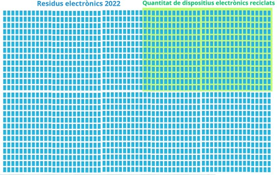
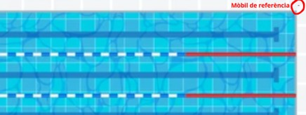

Malgrat l’accelerat ritme de desenvolupament i fabricació de nous productes electrònics en l’ultima dècada, les capacitats de reciclatge tan sols s’han vist lleugerament optimitzades, plantejant la pregunta de si el model de recursos actuals és l’adequat.
L’exemple més evident d’això és amb els mòbils i tauletes ja que són el tipus de dispositiu electrònic més usat per la població en el dia a dia i alhora un dels que tenen pitjor capacitat de reciclatge, rondant el 22%. Per posar-ho en perspectiva, l’any 2022 es van produir 5 milions de tones de residus en mòbils i aparells lleugers com portàtils, aproximadament tants com per omplir 1700 piscines olímpiques, d’aquestes només 374 serien dispositius recol·lectats i en reciclatge.


Visualització de la quantitat de residus electrònics generats i reciclats anualment en volum de piscines olímpiques.
A diferència d’altres aparells, el reciclatge de mòbils és especialment complex, ja que a causa de les estrictes necessitats del mercat i la seva reduïda mida separar els components per a un millor reciclatge resulta pràcticament inviable. Tenint en compte això podem comprendre millor la distribució de percentatges de material que es poden reciclar.
Prenent com a referència un mòbil de 110 g de 7 anys d’antiguitat, finalitzada la seva vida útil i en procés de reciclatge la composició és la següent: 32% vidre, 17% plàstic i 45% metalls. El vidre i el plàstic rarament es reciclen, queden triturats i o bé es cremen en el procés de fosa dels metalls o bé queden en forma d’escòria al final. En certes ocasions aquesta escòria es fa servir com a additiu en materials de construcció, però no és l’habitual.
On es pot fer el major reciclatge és en metalls, concretament amb els metalls nobles (or, coure, platí i pal·ladi). Aquests ocupen un 12% de la massa dels metalls que conté el mòbil, però són el principal motor del reciclatge, ja que el seu valor constitueix el 84% del valor de tots els metalls. Degut a que les seves concentracions en mòbils són molt superiors a les dels minerals en que es troben, els mètodes d’extracció tradicionals són vàlids i permeten obtenir grans eficiències d’entre 70% i 95% depenent de l’element.
En canvi, amb la resta de metalls la història canvia molt, sobretot amb els anomenats critical raw materials, els quals són metalls d’us imprescindible però de subministrament limitat i controlat per pocs països. En aquest grup s’inclouen les terres rares, l’antimoni, el gal·li, el germani i d’altres.
Degut a la ínfima però molt necessària quantitat utilitzada no és viable el seu reciclatge en la majoria de casos o directament, no hi ha interès econòmic. Pel fet d’estar treballant amb quantitats tan petites i de tants elements diferents, els rendiments de les extraccions es desplomen (no superant ni el 1% de rendiment en la majoria de casos) i no fan rendible ni d’interès la seva extracció.
Malgrat això, una recuperació parcial d’aquests elements podria suposar una canvi notable en el mercat global. Suposant que tots els mòbils d’entre 2012 i 2017 es reciclessin perfectament, la quantitat de gal·li obtinguda seria d’un 22% de la producció mundial anual d’aquest element, la qual cosa és encara més impactant si considerem que el percentatge en massa de gal·li dins d’un mòbil és del 0.0082%. Amb el germani els resultats són pràcticament idèntics.
En resum, el reciclatge de mòbils no ve motivat industrialment per un objectiu de tecnologia verda, sinó purament per maximitzar beneficis. Dels 53 metalls presents en un mòbil se’n reciclen menys de 10 i es perden aquells més crítics i causants de crisis humanitàries i conflictes en països en desenvolupament.